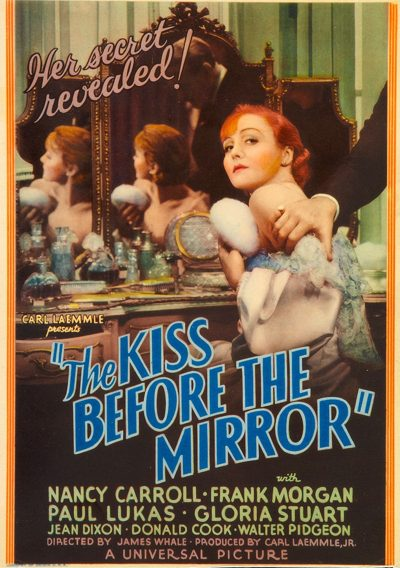

Kiss Before the Mirror

Starring: Nancy Carroll, Frank Morgan, Paul Lukas
Director: James Whale
Writer: William Anthony McGuire
Producer: Carl Laemmle Jr.
The Kiss Before the Mirror is a 1933 American pre-Code mystery thriller film directed by James Whale and starring Nancy Carroll, Frank Morgan, Paul Lukas, and Gloria Stuart. An adaptation of the Ladislas Fodor stage play of the same name, the film focuses on the torrid mystery of a young woman's murder in Vienna.
Trivia
- After completing The Old Dark House (1932) for Universal Pictures, director James Whale was asked by the studio to direct a screen adaptation of The Kiss Before the Mirror, a stage play by Ladislas Fodor.
- At the time, Whale was anxious to direct The Invisible Man (1933), but accepted the offer as R. C. Sherriff's screenplay for The Invisible Man was not yet complete.
- Universal executive Carl Laemmle Jr. wanted Charles Laughton to portray attorney Dr. Paul Held, but Whale instead cast Frank Morgan in the role, with Nancy Carroll starring opposite Morgan as his wife.
Previous Showings
3 Runs • 2 Festivals
Original Billings: 1 run (June 7, 1933)
Original Run: June 7, 1933 (Wednesday - Thursday)
All runs on record (3):
- June 7, 1933 (Wednesday - Thursday)Paul Lukas, Gloria Stuart
- September 12 - 13, 2012UNIVERSAL PICTURES Part 1: 1930-1935w/ Only Yesterday
- October 17 - 18, 2019UNIVERSAL PICTURES 1931-1935w/ Magnificent Obsession